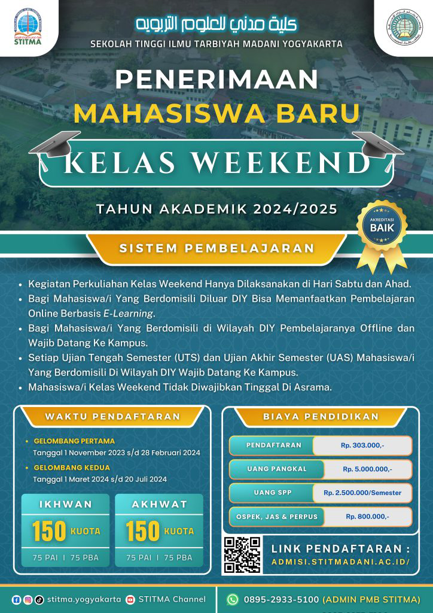

Bulughul Maram
Facebook

Matan Taqrib Ibadah dan Muamalat

Apakah Wahabi Mengingkari Syafa’at Nabi?
Di masyarakat kita, sering terjadi kebiasaan untuk mengusap muka setelah berdoa atau sholat...
Baca Selengkapnya »
Hukum Mentauhidkan Allah Tapi Meninggalkan Kewajiban-Nya
Di masyarakat kita, sering terjadi kebiasaan untuk mengusap muka setelah berdoa atau sholat...
Baca Selengkapnya »
Hukum Mengusap Wajah Setelah Doa
Apakah Nabi ﷺ mengusap wajah setelah berdoa? Bagaimana praktik sahabat dan imam madzhab? Simak pembahasannya...
Baca Selengkapnya »
Bolehkah Berdoa Setelah Sholat?
Banyak orang terbiasa berdoa langsung setelah sholat. Apakah ada dalil shahih yang mendukung itu? Temukan jawabannya...
Baca Selengkapnya »